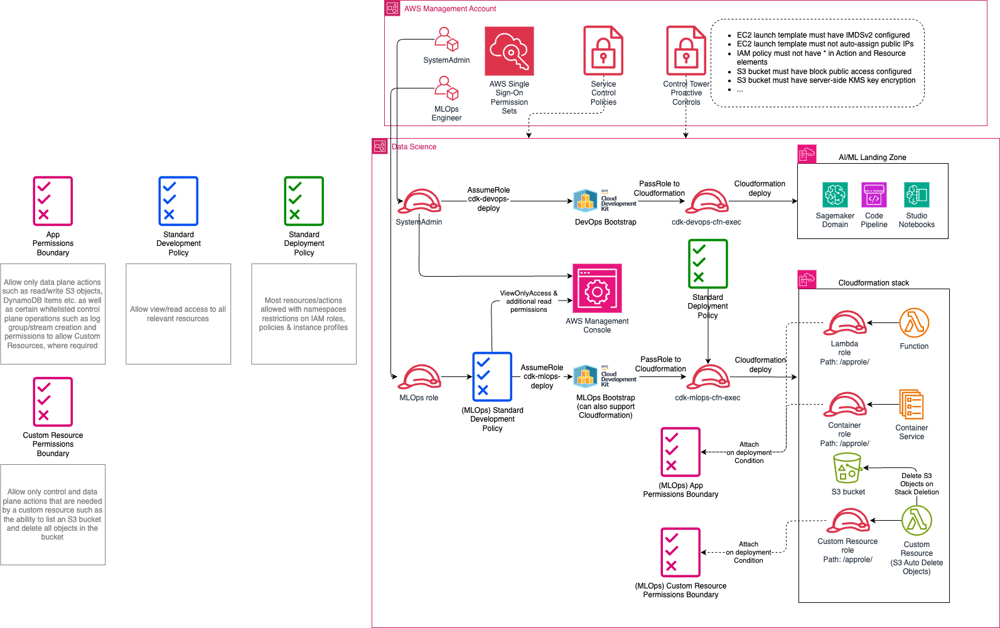

Background Link to heading
The AWS Cloud Development Kit (AWS CDK) is an open-source software development framework that allows developers to define cloud infrastructure in code and provision it using AWS CloudFormation. It supports familiar programming languages like TypeScript, Python, Java and others. By simplifying the process of writing CloudFormation templates, the AWS CDK enables developers to quickly and easily build cloud applications.
The AWS CDK offers high-level components known as constructs, which come pre-configured with sensible defaults for cloud resources, making it easier to set up complex environments. Developers can also create custom constructs to encapsulate and reuse cloud patterns specific to their applications. This approach not only accelerates the development cycle but also ensures consistency and best practices across deployments. The AWS CDK seamlessly integrates with other AWS services and tools, further enhancing the developer experience and productivity on the AWS platform.
One general challenge in AWS CDK adoption is the bootstrap process. The bootstrap is a generated, versioned CloudFormation template that provisions resources required by the CDK to deploy applications into each AWS account and region. This includes an S3 bucket for storing assets and IAM roles that the CDK assumes for various deployment activities.
At Virtuability, we have worked with the CDK in various environments over the years. A common request is that the default CDK bootstrap is not secure enough. We agree. The AdministratorAccess policy is used by default, allowing unrestricted deployment, which can be problematic in organisations with stricter security requirements. Customising the bootstrap to include guardrails can address this challenge.
Generally, a conversation about CDK security with Security, Cyber or CloudOps teams is had across the following dimensions:
- Use of IAM PassRole: in itself not an explicit API call but rather an implied permission in the context of allowing an AWS service to do something on your behalf via a role (e.g. a Lambda execution role)
- The aggregate permissions allowed to perform a deployment. For instance, access to IAM user and group creation may be restricted or disallowed
- What the workloads can do at runtime, e.g what AWS API calls a Lambda can make to other services such as CloudWatch Logs, S3 and DynamoDB. This is typically achieved through use of AWS IAM Permissions Boundaries
- Guardrails (or Controls) to ensure that workloads are deployed securely, e.g. that S3 buckets have default encryption enabled
- Separation of landing zone and app & workload concerns, e.g through namespacing roles, policies and instance profiles. This includes use of AWS IAM PassRole constraints on paths
With this blog post we have included a customised AWS CDK bootstrap repo cdk-guardrails, which can be used as a foundation to get started. It demonstrates several of these dimensions.
Challenges with AWS CDK Adoption Link to heading
As mentioned, one of the general challenges of adopting the AWS CDK is the bootstrap process. The bootstrap is a generated, versioned CloudFormation template that provisions the necessary resources for deploying applications into each AWS account and region. It includes an S3 bucket for storing assets and IAM roles that the CDK assumes to stage templates, artifacts, perform lookups, and deploy resources.
Out of the box, the bootstrap includes two roles for deployment activities:
cdk-<qualifier>-deploy-role-<account>-<region>: This role is assumed by the CDK command to initiate deployment (e.g., cloudformation:CreateStack).cdk-<qualifier>-cfn-exec-role-<account>-<region>: This role is passed by the CDK command to the CloudFormation service and is used to deploy AWS resources.
By default, the AdministratorAccess policy is attached to the cfn-exec role, which means there are no restrictions on what the role can deploy. This can be problematic in organisations that require a least privilege mindset and permissions. Additionally, AWS accounts typically contain landing zone components and stacks that must be protected from changes by application stacks. The good news is that the CDK bootstrap can be customised to meet security requirements and guardrails.
Customised CDK Bootstraps Link to heading
Creating a bootstrap for each landing zone component or application is impractical. Therefore, a middle-ground solution is needed that meets security requirements and guardrails while enabling developers to work relatively unhindered.
A tiered approach to multiple co-existing CDK bootstraps is possible with different bootstrap qualifiers. For instance, a CloudOps and System administrator team can use a bootstrap for landing zone concerns (e.g. qualifier lz), while app development teams use a bootstrap with qualifier app (or mlops as in this sample).
lz: A landing zone bootstrap with elevated permissions that allow a CloudOps team to deployapp,mlopsetc: An app workload bootstrap that can be commonly shared between workloads and deployment pipelines
Guardrails Link to heading
The following rules apply to the CDK bootstrap:
- The CDK can create roles but must attach a suitable permissions boundary.
- Policies, roles and instance profiles must be namespaced (e.g. /apppolicies/, /approles/, /appinstanceprofiles/) to prevent changes to IAM resources outside of these namespaces, protecting the landing zone
- Permissions boundaries can be split by “job function” or purpose. In this sample, three permissions boundaries are created:
- app workload roles
- custom resources
- init resources (such as the EKS Cluster’s nested template).
- Aspects apply the correct permissions boundary based on a construct’s context
- Whitelist allowed AWS services only, and do not allow the creation of a VPC or Transit Gateway but allow the creation of EC2 instances
- Optionally include specific role ARNs that can use the CDK bootstrap roles
Note that it is not ucommon to have several Permissions Boundaries to protect different workloads.
Architecture Link to heading
The diagram below provides an overview of how to enable developers to develop and deploy workloads that must adhere to certain guardrails.

A Note on Permissions Boundaries Link to heading
While it is possible to set the permissions boundary out-of-the-box via the cdk.json file with the following context, it is not as flexible as using an Aspect visitor pattern:
"@aws-cdk/core:permissionsBoundary": {
"name": "cdk-mlops-permissions-boundary-123456789012-eu-west-1"
}
Setting the permissions boundary like this prevents multi-account and multi-region CDK apps from deploying successfully. Various workarounds exist, but using the above mechanism will not add permissions boundaries to roles during unit tests, making it difficult to test them.
Instead, Aspects (visitor pattern) can be used to decorate roles with permissions boundaries that include account, region, and bootstrap qualifier context. This approach allows for multiple permissions boundaries for different purposes rather than just one.
CDK Bootstrap Deployment Link to heading
The input parameters to the stack do not fundamentally differ from the standard bootstrap, except for one exception:
When deploying via the bootstrap from one account to another (e.g., from a Shared Services account), the standard bootstrap does not offer an option to be more granular in the trust relationship between the accounts beyond account ID. This customised bootstrap offers the TrustedAccountsRoles input parameter, a comma-separated list of role ARNs (or role ARN patterns with wildcard *) to further narrow which roles can deploy from the trusted account to the deployment account.
Finally, a CDK bootstrap can either be deployed as a standalone Cloudformation Stack or it can be deployed as a Cloudformation StackSet across multiple accounts and regions.
A StackSet reduces the amount of work required to deploy and maintain the CDK bootstrap across a large Organisation. As with all things, the CDK bootstrap evolves over time. In order to test the versions of the bootstrap we typically use 3 StackSets to deploy first to a Development OU, then a Staging OU and finally a Production OU. In this way changes can be tested before being deployed to Production accounts.
Sample CDK App Link to heading
In the samples/cdk-app directory of the repo, there is a sample CDK app that demonstrates all aspects of using the CDK bootstrap with guardrails. This includes:
- An aspect that adds the CDK bootstrap permissions boundary to all roles defined in the CDK app (see
samples/cdk-app/common/iam_pb_aspect.py). - An aspect that automatically adds a path to every IAM policy, role, and instance profile (see
samples/cdk-app/common/iam_path_aspect.py).
Conclusion Link to heading
Navigating the AWS CDK with precision and security doesn’t have to be a daunting task. By weaving in essential guardrails like permissions boundaries, namespaced IAM resources, and tailored role ARNs, organizations can hit the sweet spot between robust security and developer freedom.
The tiered bootstrap approach and aspect patterns offer a dynamic and flexible framework, ensuring seamless multi-account and multi-region deployments.
With these strategies in place, your team can confidently harness the power of the AWS CDK to build, innovate, and deploy—without ever compromising on security. So, gear up, dive in, and let the AWS CDK elevate your cloud application game to new heights!
References Link to heading
Here are some helpful resources to further explore the use of IAM permissions boundaries and CDK guardrails:
- When and where to use IAM permissions boundaries
- aws-samples/example-permissions-boundary
- How to use the PassRole permission with IAM roles
- AWS re:Inforce - Best practices for delegating access on AWS
With these guidelines and guardrails in place, you can ensure that your CDK deployments are secure and compliant with organisational policies, while still enabling developers to work effectively.